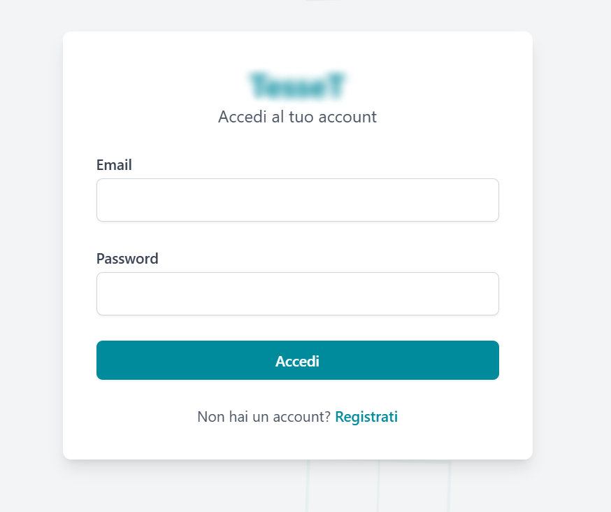
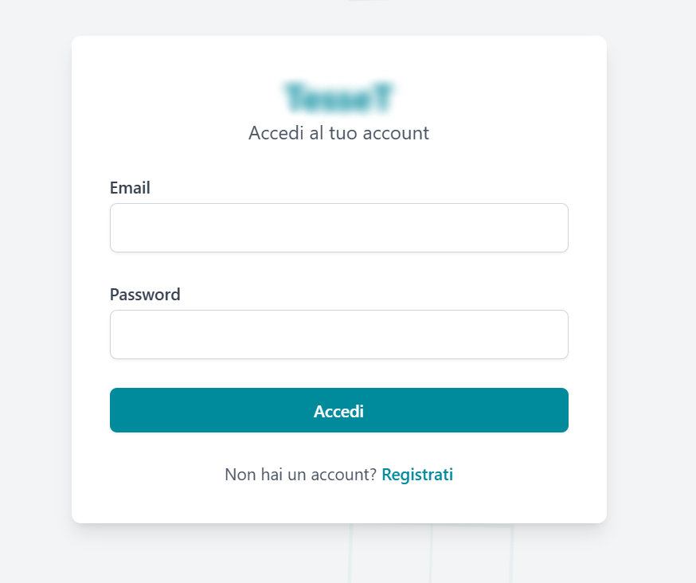

Preventivatore Web
A modern web application for managing quotes in the Italian construction industry.
 

About This Project
This project is a comprehensive business tool designed to streamline the quoting process for Italian manufacturers of PVC and aluminum windows (serramenti). It provides a centralized platform for managing products, clients, and quotes, enhancing efficiency and professionalism.
Key Features
- Multi-Role User System (Admin, Management, User)
- Dynamic Product Catalog with Advanced Filtering
- Interactive Quoting Engine with Complex Cost Calculations
- PDF Generation for Professional Quotes
- Technical Drawing Management (.dxf to .svg)
- Document Management (Technical Sheets)
Technical Challenges
Building this application required a deep understanding of business logic, especially for the Italian market. Key challenges included implementing a flexible pricing grid, managing complex state for IVA and discounts, and integrating a file parsing system for technical drawings.